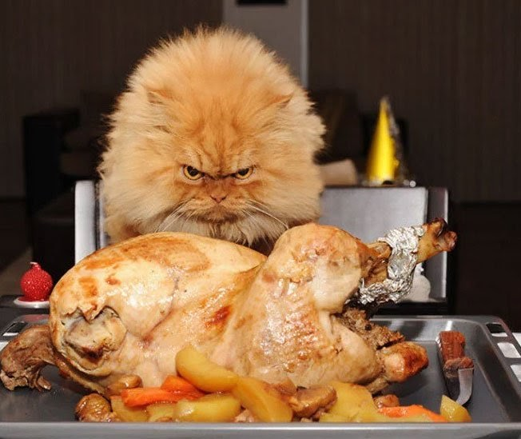
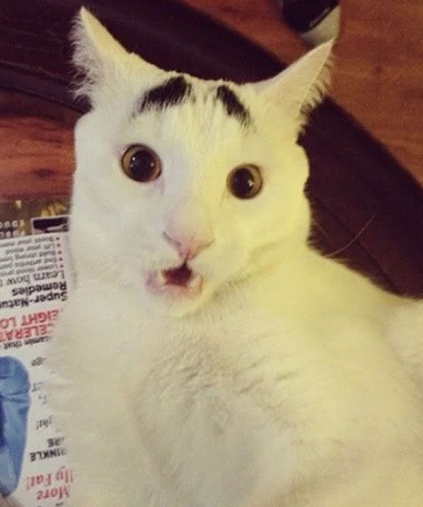
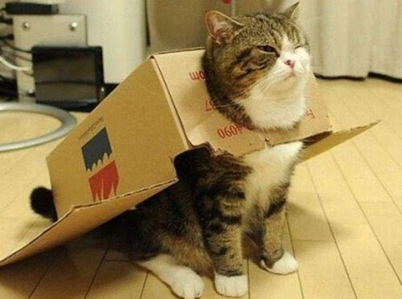
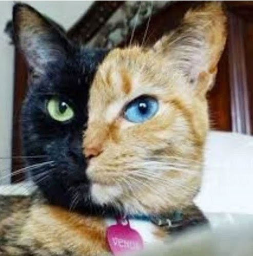
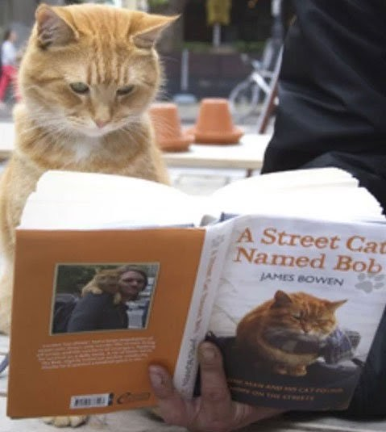
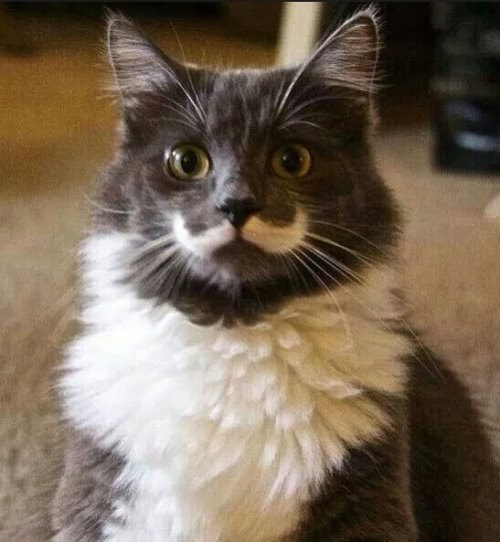
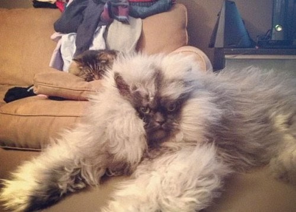
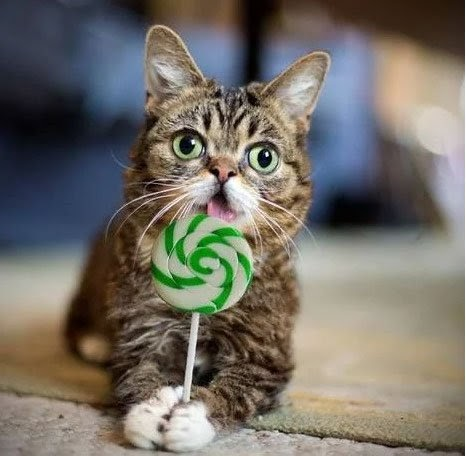
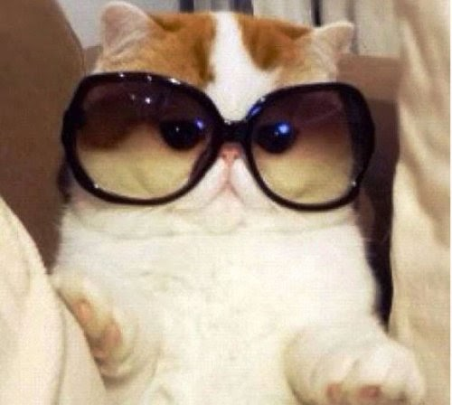
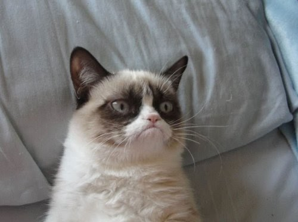

|  |  |
| Персидский кот Гарфи | Сэм (Sam), кот породы као мани |
| С виду это очень зловещий котик, и от одного только его взгляда становится не по себе. Но на самом деле в жизни он очень милый и дружелюбный питомец. Чаще всего его фотографии в сети появляются на фоне праздничной еды, которую он как будто бы защищает от покушений чужих лап и даже рук. Если вы часто сидите в интернете, то точно видели много смешных снимков с Гарфи в главной роли. | У этого котика в подписчиках на Инстаграме больше 221 тысячи поклонников. Не секрет, что его хозяева заработали на нем много денег. Об этом свидетельствует даже его удивленная мордочка, на которой красуются черные пятна необыкновенной формы в виде бровей. А уж на фотографиях, где Сэм еще и с открытым ртом, он и вовсе выглядит, как ошеломленный до глубины души. Кажется, что где-то там за этими бровями скрывается настоящий человек… |
|  |  |
| Мару (Maru), шотландская вислоухая | Венус (Venus), кошка породы химера |
| Все кошки любят играть с коробками, но Мару стал особенно знаменитым благодаря этому пристрастию. Пожалуй, эта фотография «котосамолета» облетела интернет больше раз, чем слухи о правительственных заговорах. | В свое время Венус была настоящей королевой интернета. А еще многие считали, что окрас ее шерсти – подделка, и что хозяева сами перекрасили кошку в рыжий и черный цвета. Но те, кто разбирается в породах, конечно же, понимают, что это естественная красота. А уж лучше природы человек еще пока ничего сам не придумал. |
|  |  |
| Уличный кот Боб (Bob), порода красный табби | Гамильтон (Hamilton), кот-хипстер, порода мейн-кун, помесь с норвежской лесной кошкой |
| Некоторые люди в лице кошек находят лучших друзей, а для Джеймса Боувена (James Bowen) уличный кот Боб стал настоящим спасителем. Больше об этой трогательной истории можно узнать в книге самого Боувена или посмотрев кино. Но если коротко, то уличный музыкант, страдающий наркозависимостью, в один прекрасный момент понял, что его стремление помочь больному животному стало сильнее его нездоровой тяги к химическим веществам. С тех пор кот и Джеймс не расстаются. | Очевидно, что усы Гамильтона – его самая приметная внешняя черта. Сфотографированный в правильном ракурсе он даже похож на особу благородных кровей, совсем как котик из высших кругов общества! |
|  |  |
| Полковник Мяу (Meow), смешанная порода перса и гималайской кошки | Лил Баб (Lil Bub), порода манчкин |
| Конечно же, понятно, что перед фотографией этого чудо-кота хорошенько распушили. Но согласитесь, выглядит животное просто гигантом и настоящим диким зверем. Слава у него заслуженная! | К сожалению для Лил Баба, он родился самым маленьким среди своих братьев и сестер, но вскоре перерос весь помет. Если не по росту, то, по крайней мере, в том, что касается онлайн-славы. Эта известная фотография до сих пор вызывает улыбку на лицах миллионов любителей зверей! |
|  |  |
| Кот Снупи (Snoopy), порода – экзотический короткошерстный | Кот Грампи (Grumpy), сиамский сноу-шу |
| У этого плосколицего кота в Инстаграме невероятное количество подписчиков – 361 тысяча! И не смотрите на его глупую мордочку с осуждением, потому что его хозяева утверждают, что у Снупи на самом деле очень глубокий внутренний мир. Недаром его фотографии так успешно разлетелись по всему миру. | Его настоящее имя Тардар Соус (Tardar Sauce), и этот кот по праву является одним из самых знаменитых домашних животных в мире! Грампи точно никогда не будет забыт благодаря своему уникальному выражению мордочки, словно говорящему всем окружающим, что они недостойны и кончика его хвоста. |